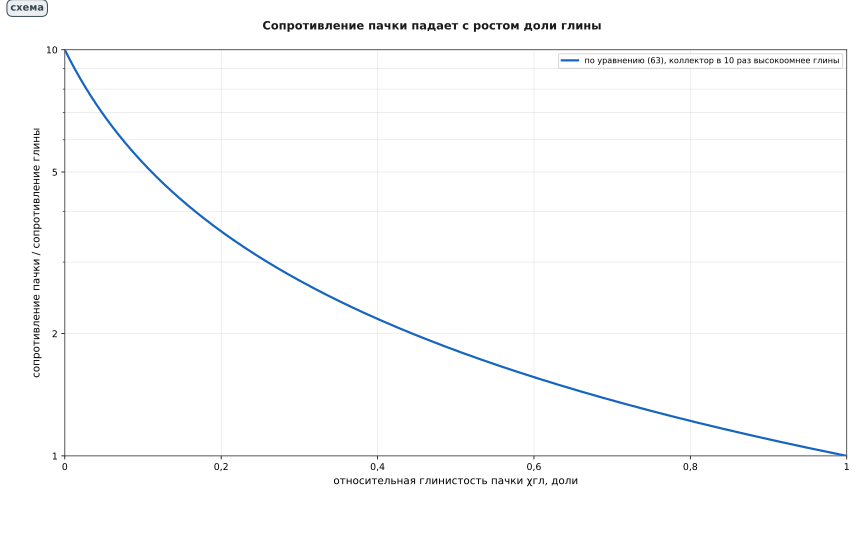

Бывает пачка из чередования тонких прослоев коллектора и глины. Это коллектор со слоистой глинистостью. Автор делает вывод: прослои неколлектора там не выделяются даже методами с максимальным вертикальным разрешением. стр. 101
«отдельные прослои неколлекторов не выделяются даже по данным методов с максимальной разрешающей способностью по вертикали»
Поэтому суммарную эффективную толщину находят расчётом. Используют интегральные характеристики пачки — показания, усреднённые по всей пачке. стр. 101
«находят расчетным путем по интегральным характеристикам пачки в целом»
Почему сопротивления складываются так
Ток течёт вдоль тонких слоёв, и слои работают как параллельные проводники. Складываются проводимости — величины, обратные сопротивлениям. Каждая берётся с весом — долей толщины своего слоя. пояснение модели
Способ а: по сопротивлению
По БЭЗ или комплексу фокусированных методов находят сопротивление пачки. Задают сопротивления прослоев коллектора и глины. По уравнению (63) рассчитывают относительную по толщине глинистость — долю глинистых прослоев в толщине пачки. стр. 102
«рассчитывают относительную по толщине глинистость»

Кривая рассчитана кодом по уравнению (63) для отношения сопротивлений коллектора и глины, равного 10 (как у палеток рис. 72). Уже небольшая доля глины заметно снижает сопротивление пачки.
Класс A · схема · нарисовано кодом · стр. 102
Затем по формуле (64) вычисляют эффективную толщину пачки. Это толщина пачки, умноженная на долю коллектора. стр. 102
«Далее вычисляют эффективную толщину пачки»
Это допущение способа: сопротивления прослоев берут не из самой пачки. Сопротивление глин — по глинам, вмещающим пачку. Сопротивление коллектора рассчитывают по керну или берут по самым чистым продуктивным коллекторам разреза. стр. 102
«берут обычно удельное сопротивление глин, вмещающих пачку»
Способ б: по амплитуде СП
Второй способ — по расчётным кривым αСП = f(χгл), построенным по формулам Долля (рис. 72). Здесь αСП — отношение средней аномалии СП в пачке к максимальной аномалии в ближайшем чистом коллекторе. стр. 102
«построенным по формулам Долля для фиксированных значений»
«берут отношение среднего значения аномалии СП в пачке»
Палетку выбирают по шифру — отношению сопротивлений. По ней находят глинистость пачки, а затем по формуле (64) — эффективную толщину. стр. 102
«выбирают палетку расчетных кривых»
По шагам
Как найти эффективную толщину тонкослоистой пачки
Определите сопротивление пачки по БЭЗ или фокусированным методам. стр. 102
Задайте сопротивления прослоев: глины — по вмещающим глинам, коллектора — по керну или чистым коллекторам. стр. 102
Найдите относительную глинистость по уравнению (63) или по палетке αСП = f(χгл). стр. 102
Вычислите эффективную толщину по формуле (64). стр. 102
Цифры и условия
Условие: прослои тоньше вертикального разрешения даже микроэлектрических методов. стр. 101
Палетки рис. 72 рассчитаны для отношения сопротивлений 10. стр. 102
Уравнение (63): проводимость пачки — сумма проводимостей прослоев глины и коллектора, взвешенных их долями толщины (индексы восстановлены по смыслу; в тексте искажены). стр. 102
Обозначения
Обозначение
Что это
Единицы
$\rho_п$
удельное сопротивление пачки
Ом·м
$\chi_{гл}$
относительная по толщине глинистость пачки
—
$\rho_{гл}$
сопротивление глины
Ом·м
$\rho_{пк}$
сопротивление прослоев продуктивного коллектора
Ом·м
$$h_{эф\Sigma} = h_п (1 - \chi_{гл})$$
Формула (64): суммарная эффективная толщина пачки стр. 102
Обозначения
Обозначение
Что это
Единицы
$h_{эф\Sigma}$
суммарная эффективная толщина
м
$h_п$
толщина пачки
м
$\chi_{гл}$
относительная глинистость пачки
—
Частая ошибка модель
✗Ошибка: Каротажная кривая — это и есть порода.
✓На самом деле: Тонкие прослои тоньше разрешения приборов на кривых не видны; кривая показывает усреднённый отклик пачки. стр. 101
Что это значит для данных модель
Кривые усредняют свойства по окну разрешения прибора; для тонкослоистых пачек долю прослоев восстанавливают обратной задачей по модели смешения.
Вход
сопротивление пачки, сопротивления глины и чистого коллектора, αСП
Выход
относительная глинистость и эффективная толщина пачки
Где ломается
Результат зависит от принятых сопротивлений прослоев; модель (63) не учитывает плотные прослои.
гипотеза Это пример задачи «разрешение ниже размера объекта», где нужна физическая модель смешения, а не сегментация кривой.
Где здесь ручной труд специалиста
Входные данные
БЭЗ/фокусированные зонды, СП, сопротивления глин и чистых коллекторов
Ручные шаги
выбор опорных значений, решение уравнения или работа с палеткой
Точки суждения
какие сопротивления принять для прослоев
Время
трудоёмкая обработка данных БЭЗ в слоистых пачках
Типичные ошибки
брать опорные сопротивления не из того пласта
Аналогия модель
Как оценка доли компонент по агрегированной метрике (unmixing): видна только средняя, а состав восстанавливают по модели.
Где аналогия перестаёт работать: Модель смешения требует знать свойства «чистых» компонент, которые берут из соседних пластов с допущением.
Как это делается сейчас модель
Сегодня для тонкослоистых коллекторов применяют также приборы высокого разрешения и методы, измеряющие анизотропию сопротивления.
Глубже
Почему проводимости складываются модель
При токе, текущем вдоль тонких слоёв, слои работают как параллельные проводники: складываются проводимости (обратные сопротивления), взвешенные долями толщин. Это и выражает уравнение (63).
Рисунки книги к этому шагу по книге
Рис. 72. Рис.72. Кривые зависимости \( \alpha_{\mathrm{CII}} = f(\chi_{\mathrm{cn}}) \)
при \( \rho_{n}/\rho_{cn} = 10 \) . Шифр кривых – \( \rho_{n}/\rho_{sn} \) стр. 102перерисован кодом — ниже
Кривые зависимости относительной амплитуды ПС αСП от относительной глинистости χгл при ρп/ρсп = 10 (по формулам Долля); шифр кривых — ρп/ρгл. (перерисовано по рис. 72, стр. 102)
Класс A · реальные данные · перерисовано по рис. 72, стр. 102 · нарисовано кодом · стр. 102Упрощения перерисовки: Точки кривых сняты со скана вручную (около 0,02 по обеим осям); Соответствие шифров кривым установлено по выносным линиям рисунка
Новые понятия
слоистая глинистость (laminated shale)
Глина в виде тонких прослоев, чередующихся с прослоями коллектора. стр. 101модель
интегральные характеристики пачки (bulk (averaged) properties)
Усреднённые по всей пачке показания методов (сопротивление, амплитуда СП). стр. 101модель
относительная по толщине глинистость (shale volume fraction (laminated))
Доля суммарной толщины глинистых прослоев в толщине пачки. стр. 102
Проверь себя
Один ответ
Верный ответ: Прослои неколлектора не выделяются даже методами с максимальным вертикальным разрешением
Слои тоньше разрешения приборов, поэтому долю глины восстанавливают по усреднённым показаниям пачки. Где это в тексте (стр. 101) →
Пропуск в тексте
Вставьте пропущенное слово.
Сопротивление глин для расчёта берут по глинам, пачку.
Верный ответ: Сопротивление глин для расчёта берут по глинам, [вмещающим] пачку.
Сопротивления прослоев берут не из самой пачки: глины — по вмещающим глинам, коллектор — по керну или чистым коллекторам. Где это в тексте (стр. 102) →
Источник
Все утверждения шага с дословной цитатой автора и страницей книги (по PDF).
В тонкослоистой пачке прослои неколлектора не выделяются даже микроэлектрическими методами. вывод
«отдельные прослои неколлекторов не выделяются даже по данным методов с максимальной разрешающей способностью по вертикали»
Поэтому эффективную толщину находят расчётом по интегральным характеристикам пачки. вывод
«находят расчетным путем по интегральным характеристикам пачки в целом»
Способ а: по сопротивлению пачки и прослоев рассчитывают относительную глинистость по уравнению (63). наблюдение
«рассчитывают относительную по толщине глинистость»
Затем вычисляют эффективную толщину пачки по формуле (64). наблюдение
«Далее вычисляют эффективную толщину пачки»
Сопротивление глин берут по вмещающим глинам, коллектора — по керну или наиболее чистым продуктивным коллекторам. допущение
«берут обычно удельное сопротивление глин, вмещающих пачку»
Способ б: глинистость находят по кривым αСП = f(χгл), построенным по формулам Долля (рис. 72). наблюдение
«построенным по формулам Долля для фиксированных значений»
αСП — отношение средней аномалии СП в пачке к максимальной в ближайшем чистом коллекторе. наблюдение
«берут отношение среднего значения аномалии СП в пачке»
Палетку выбирают по шифру отношения сопротивлений, затем находят глинистость и по (64) — эффективную толщину. наблюдение
«выбирают палетку расчетных кривых»
Исходный текст урока
Стр. 101 · Терригенный разрез
4. В пачке, представленной чередованием тонких прослоев коллектора и глины (глинистый коллектор со слоистой глинистостью), отдельные прослои неколлекторов не выделяются даже по данным методов с максимальной разрешающей способностью по вертикали (микроэлектрические методы), поэтому суммарную эффективную толщину h,ф2 продуктивного коллектора в этом случае находят расчетным путем по интегральным характеристикам пачки в целом.
Стр. 102 · Терригенный разрез
a. Определяют удельное сопротивление пачки \( \rho_{n} \) по диаграммам БЭЗ или комплекса фокусированных методов, задают удельные сопротивления прослоев продуктивного коллектора \( \rho_{nm} \) и глины \( \rho_{cn} \) и рассчитывают относительную по толщине глинистость \( \chi_{cn} \) пачки, решая уравнение (63) относительно \( \chi_{cn} \) :
В качестве \( \rho_{cn} \) берут обычно удельное сопротивление глин, вмещающих пачку; величину \( \rho_{nm} \) рассчитывают по значениям параметров, измеренных по керну, или принимают в качестве нее удельное сопротивление наиболее чистых продуктивных коллекторов в разрезе.
Стр. 102 · Терригенный разрез
б. Определяют \( \chi_{cn} \) по кривым \( \alpha_{\mathrm{CII}_{\mathrm{cn}}} = f(\chi_{\mathrm{cn}}) \) . построенным по формулам Долля для фиксированных значений \( \rho_{nm}/\rho_{cn} \) и \( \rho_{nm}/\rho_{sn} \) , где \( \rho_{sn} \) – удельное сопротивление зоны проникновения в прослоях продуктивного коллектора (рис.72).
В качестве \( \alpha_{CII} \) берут отношение среднего значения аномалии СП в пачке \( \Delta U_{CII} \) к максимальной величине \( \Delta E_{max} \) в близлежащем чистом коллекторе. Как и в предыдущем случае, в качестве \( \rho_{cn} \) используют удельное сопротивление вмещающих глин, а в качестве \( \rho_{nm} \) , \( \rho_{sn} \) – соответствующие значения параметров чистого коллектора. Для определения \( \chi_{cn} \) выбирают палетку расчетных кривых \( \alpha_{CII_{cn}} = f(\chi_{cn}) \) , шифр которой соответствует заданному \( \rho_{nm}/\rho_{cn} \) , после чего находят \( \chi_{cn} \) для заданных значений \( \rho_{nm}/\rho_{sn} \) и \( \alpha_{CII_{cn}} \) . После вычислений \( \chi_{cn} \) определяют \( h_{sp\Sigma} \) по формуле (64).